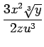
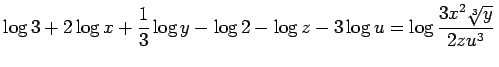
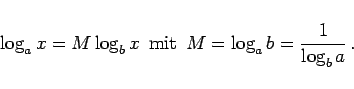

Inhalt Index DeskTop Bronstein

 Arithmetik Elementare Rechenregeln Potenzen, Wurzeln, Logarithmen Logarithmen
Arithmetik Elementare Rechenregeln Potenzen, Wurzeln, Logarithmen Logarithmen


| Beispiel |
|
Logarithmieren des Ausdrucks : |
Um nach diesen Regeln Summen und Differenzen zu logarithmieren, sind diese vorher, falls möglich, in Produkte oder Quotienten umzuwandeln.
Oft wird die inverse Umformung benötigt, d.h. die Darstellung eines Ausdrucks mit einigen Logarithmen verschiedener Größen in den Logarithmus eines einzigen Ausdrucks.
| Beispiel |
|
. |
|  | (1.23) |
Man nennt M auch den Transformationsmodul.